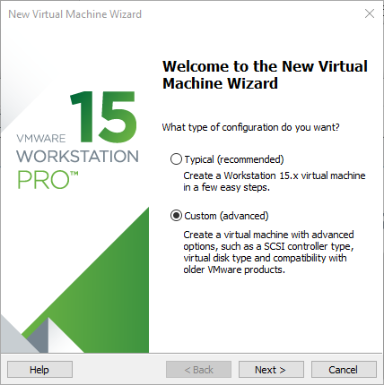
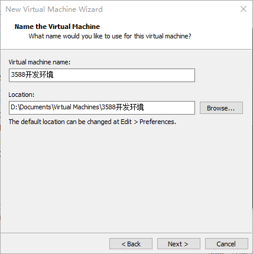
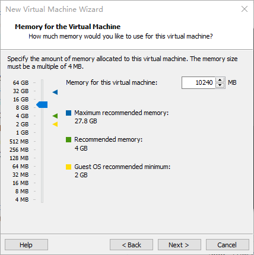

Forlinx Desktop 22.04_User’s Compilation Manual_V1.0
Document classification: □ Top secret □ Secret □ Internal information ■ Open
Copyright
The copyright of this manual belongs to Baoding Folinx Embedded Technology Co., Ltd. Without the written permission of our company, no organizations or individuals have the right to copy, distribute, or reproduce any part of this manual in any form, and violators will be held legally responsible.
Forlinx adheres to copyrights of all graphics and texts used in all publications in original or license-free forms.
The drivers and utilities used for the components are subject to the copyrights of the respective manufacturers. The license conditions of the respective manufacturer are to be adhered to. Related license expenses for the operating system and applications should be calculated/declared separately by the related party or its representatives.
Revision History
Date |
Manual Version |
Revision History |
|---|---|---|
28/02/2025 |
V1.0 |
OK3568 Forlinx Desktop 22.04 User Compilation Manual Version. |
Overview
This manual is designed to enable you to quickly understand the compilation process of the products and familiarize yourself with the compilation methods of Forlinx products. The application program needs to be cross-compiled on the Linux operating system before it can run on the development board. According to the method in the compilation manual, users can compile their own software code through practical operation.
The manual will provide instructions for setting up the environment but there may be some unforeseen issues during the environment setup process. For beginners, it is recommended to use the pre-configured development environment provided by us. This will allow you to quickly get started and reduce development time.
Linux systems are typically installed in three ways: dual system on a real machine, single system on a real machine, and virtual machine. Different installation methods have their advantages and disadvantages. This manual only provides methods to build ubuntu in a virtual machine. Computer hardware requirements: It is recommended to have at least 6GB of memory or more, so that you can allocate some memory to run the virtual machine (the virtual machine is recommended to have more than 2GB) and still do other operations on Windows, otherwise it will affect the performance of Windows.
The manual is mainly divided into four chapters:
Chapter 1. is mainly about the installation of VMware, and the version used is VMware® Workstation 15 Pro15.1.0. Users need to install VMware before using the ubuntu development environment;
Chapter 2. mainly introduces the method of loading the ubuntu development environment provided by Forlinx, and the development environment is 64-bit ubuntu22.04;
Chapter 3. mainly introduces the method of building a new ubuntu development environment. Chapter 4. uses 64-bit Ubuntu 22.04 as an example to describe the creation process of Ubuntu. Due to different computer configurations, unexpected problems may arise during the setup process. It is recommended for beginners to use the environment that we have set up directly;
Chapter 4. mainly introduces the methods of compiling the source code related to the development board.
A description of some of the symbols and formats in the manual:
Format |
Meaning |
|---|---|
Note |
Note or information that requires special attention, be sure to read carefully. |
üìö |
Relevant notes on the test chapters. |
üõ§Ô∏è |
Indicates the related path. |
Blue font on gray background |
Refers to commands entered at the command line (Manual input required). |
Black font |
Serial port output message after entering a command. |
Bold black |
Key information in the serial port output message. |
// |
Interpretation of input instructions or output information. |
Username@Hostname |
root@ok3568: development board serial port login account information; |
After packaging the file system, you can use the “ls” command to view the generated files.
forlinx@ubuntu:~/3568$ ls //List the files in this directory
OK3568-linux-source OK3568-linux-source.tar.bz2
forlinx@ubuntu: the username is forlinx and the hostname is ubuntu, indicating that the operation is performed in the development environment ubuntu.
//: Explanation of the instruction, no input required.
Ls: Blue font on a gray background, indicating relevant commands that need to be entered manually
OK3568-linux-source: Black font is the output information after entering the command; bold font is the key information; here is the packaged file system.
1. VMware Virtual Machine Software Installation
This chapter mainly introduces the installation of VMware virtual machines, using VMware Workstation 15 Pro v15.1.0 as an example to demonstrate the installation and configuration process of the operating system.
1.1 VMware Software Downloads and Purchase
Go to the VMware website https://www.vmware.com/cn.html to download Workstation Pro and get the product key. VMware is a paid software, you need to buy it yourself, or use the trial version provided by VMware.

After the download is complete, double-click the installation file to start the installation program.
1.2 VMware Software Installation
Double-click the startup program to enter the installation wizard.

Click on “Next”.

Check the terms in the license agreement that I accept, then click “Next”.

Modify the installation location to the partition where you want to install the software on your computer, then click “Next”.

Check and click on “Next”.

Check the box to add a shortcut, then click “Next”.

Click “Installation”.

Wait for the installation to complete.

Click “Finish” to try it out. If users need to use it for a long time, they need to buy it from the official and fill in the license.
2. Loading the Existing Ubuntu Development Environment
Note:
It is recommended that beginners use the virtual machine environment built by Forlinx directly. After understanding this chapter, you can directly jump to the compilation chapter for further study;
The development environment provided is: forlinx (username), forlinx (password).
There are two ways to use a virtual machine environment in VMware: one is to directly load an existing environment, and the other is to create a new environment. Let’s first talk about how to load an existing environment.
First, download the development environment provided by Forlinx. In the development environment documentation, there should be an MD5 checksum file. After downloading the development environment, you should verify the integrity of the compressed package using the MD5 checksum. (You can use an on-line MD5 checksum tool or download a specific MD5 checksum tool for this purpose). To check if the checksum in the verification file matches the checksum of the file itself. If they match, the file download is successful. If they don’t match, it suggests that the file may be corrupt, and you should consider downloading it again.
Select the zip file to unzip together

Select .vmx as the file to be opened by the virtual machine after the complete decompression.
Open the virtual machine and select the extracted 3588 development environment.vmx

Turn on this virtual machine after loading is complete to run it and enter the system’s interface.


Development environment is forlinx, and the password is forlinx. After filling in the password, select “Sign in” to log in.


3. New Ubuntu Development Environment Setup
Note: Beginners are not recommended to build the system by themselves. It is suggested to use the existing virtual machine environment. If you do not need to build the environment, you can skip this section. This section mainly explains the process of building the ubuntu system.
3.1 Ubuntu System Setup
3.1.1 Ubuntu Virtual Machine Setup
Open the VMware software, click on create a new virtual machine. Enter the following interface

Choose custom, and click “Next”.

Select the compatibility with the corresponding version of VMware, which can be found in Help->About VMware Workstation, and click “Next”.

Select Install the operating system later and click “Next”.

Leave the default and click “Next”.

Modify the virtual machine name and installation location, click “Next”.

Set the number of processors as appropriate.

Set the memory size according to the actual situation. It is recommended to use 16G.

Set the network type, the default is NAT mode, click Next. Keep the default values for the remaining steps until you reach the step to specify the disk capacity.

The default selection for the IO controller type here is LSI

The default selection here is also SCSI.

Choose to create a new virtual disk here.

Set the disk size to 200 gigabytes and select the form in which the disk exists, then click “Next” to finish.

Specify the disk file, the default one here is fine.

Click “Finish” by default.

The virtual machine creation is now complete.
In the next section, we will introduce the installation of Ubuntu system in the virtual machine, which is similar to the installation method in the real machine. Here we describe the method of installing Ubuntu system in a virtual machine.
3.1.2 System Installation
In the previous section, we have created a virtual machine, but we haven’t installed the operating system yet, so the virtual machine cannot be started. Next, we will install the Ubuntu operating system in the newly created virtual machine.
Step 1: Go to the Ubuntu official website to obtain the Ubuntu22.04 64.
The download address is:
https://old-releases.ubuntu.com/releases/22.04.4/
Because the source code is compiled and verified on 22.04, the installed version of Ubuntu is 22.04. These operations may vary slightly between Ubuntu system versions.
Download “ubuntu-22.04.4-desktop-amd64.iso”
After downloading the mirror image, you can proceed with the system installation operation.
Right-click on the created virtual machine name and select “Settings” from the pop-up menu.

The “Virtual Machine Settings” menu will pop up. Click on CD/DVD (SATA), select “Use ISO image file,” browse and choose the previously downloaded Ubuntu image, then click “OK” to confirm.

After setting up the image, ensure that the network is available. Then, start the virtual machine and proceed with the installation of the Ubuntu image.

After starting the virtual machine, wait for the installation interface to appear as shown below.

After selecting the language on the left side as shown in the image, click “Install Ubuntu”, and the language selection interface will pop up. The default language of Ubuntu is English, but of course, you can also choose Others.

The default selected language can also be reset at a later stage, after the selection is complete continue.

Next, select “Continue” as the default option to proceed with the installation. The installation process might be slow. Then, click “Continue” again.

By default, when you click on “Install Now”, a dialog box will appear as shown in the image. Simply click “Continue” to proceed.

Next, select the timezone. You can either click on the Shanghai timezone or enter “Shanghai” (or choose the appropriate timezone based on your location). Then, click “Continue” to proceed.
Finally, set your username and password. You can choose either automatic login or login with a username and password. Click “Continue” to start the automatic installation.

If the internet connection is poor, you can Skip without affecting the installation process.

Click “Restart” Now to reboot.

The system interface after the reboot is complete.

The ubuntu system installation is complete.
3.1.3 Basic Ubuntu Installation
After installing the Ubuntu22.04 operating system, there are a few configurations to make.
VMware Tools Installation:
Next, install VMware Tools. Without installing this tool, you won’t be able to copy and paste and drag file between the Windows host and the virtual machine. First click on “Virtual Machine” on the VMware navigation bar, then click “Install VMware Tools” in the drop-down box.

Once done, enter Ubuntu and the VMware Tools CD will appear on your desktop and click into it.

Enter and see a compressed file VMwareTools-10.3.25-20206839.tar.gz (it may be different for different VM versions); copy the file under the home directory (i.e. the directory with the home personal username)

Press [Ctrl+Alt+T] to bring up the Terminal Command Interface and enter the command:
forlinx@ubuntu:~$ sudo tar xvf VMwareTools-10.3.25-20206839.tar.gz

After the extraction is complete, a file named “vmware-tools-distrib” will appear.

Go back to the terminal and type cd vmware-tools-distrib to enter the directory.
Enter: sudo ./vmware-install.pl followed by pressing Enter. Then, enter your password and the installation process will begin. When prompted, you can input “yes” and press Enter to proceed. For any other inquiries, simply press Enter to go with the default installation settings.

Once the VMware tools is complete, we can implement file copy and paste between Windows and Ubuntu.
The virtual machine is displayed full screen:
If the virtual machine is not able to be displayed in full screen, you can resolve this issue by clicking on “View” and selecting “Autofit Guest.” This will adjust the display to fit the screen automatically, enabling you to have a full-screen experience in the virtual machine.

Make most of the system settings in the location shown. A lot of the setup requirements on Ubuntu can be done here.

Virtual machine hibernation settings:
Also, the default hibernation is 5min, if you don’t want to set hibernation, just set it to Never by setting Power->Screen Blank.

3.1.4 Ubuntu Network Settings
NAT Mode
By default, after the virtual machine is installed, the network connection method is set to NAT, which shares the host machine’s IP address. This configuration does not need to be changed when performing tasks like installing dependencies or compiling code.
When the VMware virtual NIC is set to NAT mode in a virtual machine, the network in the Ubuntu environment can be set to dynamic IP. In this mode the virtual NAT device and the host NIC are connected to communicate for Internet access. This is the most common way to access the external network.

Bridge Mode:
When the VMware virtual NIC device is in bridge mode, the host NIC and the virtual machine NIC communicate through the virtual bridge, and the network IP and the host need to be set in the same network segment in the Ubuntu environment. If accessing an external network, you need to set the DNS to be consistent with the host NIC. If TFTP, SFTP and other servers are used, the network contact mode of the virtual machine needs to be set as the bridge mode.

3.2 Libraries for Installing Linux Compilation System
Note: If you use the development environment provided by us, this section can be skipped directly.
Compiling for Linux requires the installation of a number of toolkits. Make sure that your computer or virtual machine can be connected to the Internet normally before the operation in this section. If the network is disconnected during the installation, please follow the following steps to install.
Install the necessary packages for compiling Linux.
forlinx@ubuntu:~$ sudo apt-get update // Update the apt-get download source
forlinx@ubuntu:~$ sudo apt-get install openssh-server vim git fakeroot // Install essential toolkits
forlinx@ubuntu:~$ sudo apt-get install repo git ssh make gcc libssl-dev liblz4-tool expect g++ patchelf chrpath gawk texinfo chrpath diffstat binfmt-support qemu-user-static live-build bison flex fakeroot cmake gcc-multilib g++-multilib unzip device-tree-compiler python-pip libncurses5-dev
forlinx@ubuntu:~$ sudo apt-get install libgmp-dev libmpc-dev libicu-dev bsdmainutils
The following libraries also need to be installed when using the Network Configuration Tool and menuconfig:
forlinx@ubuntu:~$ sudo apt-get update // Update the download source information
forlinx@ubuntu:~$ sudo apt-get install build-essential // Provide a list of software packages required for compiling programs
forlinx@ubuntu:~$ sudo apt-get install libncurses* // Used to generate text-based user interfaces
forlinx@ubuntu:~$ sudo apt-get install lzop // A compression and decompression tool based on the Lzo library
forlinx@ubuntu:~$ sudo apt-get install net-tools // Network configuration tools
4. Related Code Compilation
Forlinx Desktop system is a desktop operating system built by Forlinx on the basis of Ubuntu base. It is fully compatible with Ubuntu 22.04 and supports apt-get. Compared with the traditional Linux system, it is easier to use.
This chapter mainly describes the compiling method of the source code related to the development board, including the kernel source code compilation and the application program compilation.
4.1 Preparation Before Compilation
4.1.1 Description of the Environment
Development environment OS: Ubuntu22.04 64-bit version
Cross-toolchain: aarch64-linux-gnu
The board uses the Bootloader version: u-boot-2017.09.
Development Board Kernel: Linux-5.10.160
Development board porting QT version: qt5.15.3
4.1.2 Source Code Copy
Program Source: User Profile\Linux\Source\OK3568-linux-source.tar.bz2
Create a working directory
forlinx@ubuntu:~$ mkdir -p /home/forlinx/3568 // Create the working directory in sequence
Copy the source code files OK3568_Linux_fs.tar.bz2.0* from the user's data to the /home/forlinx/3568 directory of the virtual machine.
forlinx@ubuntu:~$ cd /home/forlinx/3568 // Switch to the working directory
forlinx@ubuntu:~/3568$ cat OK3568_Linux_fs.tar.bz2.0* > OK3568_Linux_fs.tar.bz2
forlinx@ubuntu:~/3568$ tar -xvf OK3568_Linux_fs.tar.bz2 // Extract the compressed package at the current location
Just run the command and wait for it to complete.
4.2 Source Code Compilation
Note:
After the kernel source code is decompressed for the first time, the source code needs to be compiled as a whole;
After compiling as a whole, you can compile separately according to the actual situation;
The source code compilation requires a development environment with a running memory of 8G or above. Please do not modify the VM virtual machine image configuration provided by us.
4.2.1 Full Compilation Test
In the source code path, the compilation script build. Sh is provided. Run the script to compile the entire source code. You need to switch to the decompressed source code path at the terminal and find the build. Sh films
forlinx@ubuntu:~$ cd /home/forlinx/3568/OK3568_Linux_fs
The following operations need to be performed in the source code directory, select compile configuration:
forlinx@ubuntu:~/3568/OK3568_Linux_fs$ ./build.sh defconfig
After execution there will be options to enter as shown below, enter 3 and press enter to continue.

After completing the above configuration, use the command to perform a full compilation:
forlinx@ubuntu:~/3568/OK3568_Linux_fs$ ./build.sh

After successful compilation, the corresponding compilation project result file will be generated under the OK3568_Linux_fs/rockdev folder, find the image file there.

Note: The update. img is packaged for full programming of OTG or TF card, and other files are programmed step by step.
4.2.2 Compiling Kernel Separately
The user performs the operation in the kernel source code path.
forlinx@ubuntu:~/3568/OK3568_Linux_fs$ ./build.sh kernel

The kernel in the update. img is not updated after successful compilation. Flash the kerndl/boot.img file step by step.
4.2.3 Clearance of Files Generated by the Compilation
The user performs the operation in the kernel source code path.
forlinx@ubuntu:~/3568/OK3568_Linux_fs$ ./build.sh cleanall

This operation clears all intermediate files. However, it does not affect the source files, including those that have already had changes made to them.
4.3 Use of Image File
The update. img is packaged for full programming of OTG or TF card, and other files are programmed step by step. The Image file generated by separate compilation will not be updated in the update. img file, and it needs to be flashed by single-step. (see the software manual OTG flashing for details).
5. Ubuntu Application Development
This chapter explains how to set up Ubuntu application development environment and QT application development, and how to use OK3568 development board as a real machine debugging program, which is very suitable for Ubuntu beginners to learn and refer to.
5.1 New Ubuntu Development Environment Setup
5.1.1 Download and Installation of Relevant Tools
forlinx@ubuntu:~/3568/user/OK3568_Linux_fs/ubuntu$ sudo apt update && sudo apt install qemu-user-static
[sudo] password for forlinx:
Hit:1 http://mirrors.huaweicloud.com/ubuntu jammy InRelease
Hit:2 http://mirrors.huaweicloud.com/ubuntu jammy-updates InRelease
Hit:3 http://mirrors.huaweicloud.com/ubuntu jammy-backports InRelease
Hit:4 http://mirrors.huaweicloud.com/ubuntu jammy-security InRelease
Hit:5 https://mirrors.aliyun.com/ubuntu jammy InRelease
Get:6 https://mirrors.aliyun.com/ubuntu jammy-security InRelease [129 kB]
Get:7 https://mirrors.aliyun.com/ubuntu jammy-updates InRelease [128 kB]
Hit:8 https://mirrors.aliyun.com/ubuntu jammy-backports InRelease
Get:9 https://mirrors.aliyun.com/ubuntu jammy-updates/restricted Sources [80.8 kB]
Get:10 https://mirrors.aliyun.com/ubuntu jammy-updates/main Sources [550 kB]
Get:11 https://mirrors.aliyun.com/ubuntu jammy-updates/main amd64 Packages [2665 kB]
Get:12 https://mirrors.aliyun.com/ubuntu jammy-updates/main Translation-en [428 kB]
Get:13 https://mirrors.aliyun.com/ubuntu jammy-updates/restricted amd64 Packages [3714 kB]
Get:14 https://mirrors.aliyun.com/ubuntu jammy-updates/restricted Translation-en [666 kB]
Fetched 8361 kB in 2s (4281 kB/s)
Reading package lists... Done
Building dependency tree... Done
Reading state information... Done
9 packages can be upgraded. Run 'apt list --upgradable' to see them.
Reading package lists... Done
Building dependency tree... Done
Reading state information... Done
qemu-user-static is already the newest version (1:6.2+dfsg-2ubuntu6.26).
The following packages were automatically installed and are no longer required:
libevent-2.1-7 libpython2-stdlib libpython2.7-minimal libpython2.7-stdlib openbsd-inetd python-pkg-resources python-setuptools python2 python2-minimal python2.7 python2.7-minimal tcpd update-inetd
Use 'sudo apt autoremove' to remove them.
0 upgraded, 0 newly installed, 0 to remove and 9 not upgraded.
5.1.2 Mounting of Arm Ubuntu and Copying of Program Source Code
forlinx@ubuntu:~/3568/user/OK3568_Linux_fs/ubuntu$ mkdir ubuntufs
forlinx@ubuntu:~/3568/user/OK3568_Linux_fs/ubuntu$ sudo mount jammy-rootfs.img ubuntufs/
[sudo] password for forlinx:
forlinx@ubuntu:~/3568/user/OK3568_Linux_fs/ubuntu$ cd ubuntufs/
forlinx@ubuntu:~/3568/user/OK3568_Linux_fs/ubuntu/ubuntufs$ ls
bin boot camera_engine_rkaiq_rk3568_arm64.deb dev etc home lib lost+found media mnt opt proc qopenglwidget rknpu2-v1.5.0.tar root run sbin snap srv sys tmp usr var
forlinx@ubuntu:~/3568/user/OK3568_Linux_fs/ubuntu/ubuntufs$ sudo cp -r /mnt/hgfs/share/qopenglwidget/ home/forlinx/
5.1.3 Entry into the Ubuntu Virtual Environment
forlinx@ubuntu:~/3568/user/OK3568_Linux_fs/ubuntu/ubuntufs$ sudo mount -t proc /proc/ proc/
forlinx@ubuntu:~/3568/user/OK3568_Linux_fs/ubuntu/ubuntufs$ sudo mount -t sysfs /sys/ sys/
forlinx@ubuntu:~/3568/user/OK3568_Linux_fs/ubuntu/ubuntufs$ sudo mount -o bind /dev/ dev/
forlinx@ubuntu:~/3568/user/OK3568_Linux_fs/ubuntu/ubuntufs$ sudo mount -o bind /dev/pts dev/pts
forlinx@ubuntu:~/3568/user/OK3568_Linux_fs/ubuntu/ubuntufs$ sudo mount -o bind /run/ run/
forlinx@ubuntu:~/3568/user/OK3568_Linux_fs/ubuntu/ubuntufs$ sudo chroot . /usr/bin/qemu-aarch64-static /bin/bash
root@ubuntu:/# lsb_release -a
No LSB modules are available.
Distributor ID: Ubuntu
Description: Ubuntu 22.04.5 LTS
Release: 22.04
Codename: jammy
5.1.4 Program Compilation
root@ubuntu:/# cd home/forlinx/qopenglwidget/
root@ubuntu:~/qopenglwidget# ls
bubble.cpp bubble.h glwidget.cpp glwidget.h main.cpp mainwindow.cpp mainwindow.h qopenglwidget.pro qt.png texture.qrc
root@ubuntu:~/qopenglwidget# sudo apt update && sudo apt install qtbase5-dev
Hit:1 http://ports.ubuntu.com/ubuntu-ports jammy InRelease
Hit:2 http://ports.ubuntu.com/ubuntu-ports jammy-updates InRelease
Hit:3 http://ports.ubuntu.com/ubuntu-ports jammy-backports InRelease
Hit:4 http://ports.ubuntu.com/ubuntu-ports jammy-security InRelease
Reading package lists… Done
Building dependency tree… Done
Reading state information… Done
There are 85 packages that can be upgraded. Run ‘apt list --upgradable’ to see them.
Reading package lists… Done
Building dependency tree… Done
Reading state information… Done
The following packages were automatically installed and are no longer required:
activity-log-manager ibus-data ibus-gtk ibus-gtk3 ibus-gtk4 libdee-1.0-4 libgeonames-common libgeonames0 libtimezonemap-data libtimezonemap1 libunity-control-center1 libxcb-xv0 libzeitgeist-2.0-0
python3-ibus-1.0 zeitgeist-core
Use ‘sudo apt autoremove’ to remove them.
The following additional packages will be installed:
libegl-dev libglu1-mesa-dev libqt5opengl5-dev libvulkan-dev libxext-dev qt5-qmake qt5-qmake-bin
Suggested packages:
libxext-doc default-libmysqlclient-dev firebird-dev libpq-dev libsqlite3-dev unixodbc-dev
The following NEW packages will be installed:
libegl-dev libglu1-mesa-dev libqt5opengl5-dev libvulkan-dev libxext-dev qt5-qmake qt5-qmake-bin qtbase5-dev
0 upgraded, 8 newly installed, 0 to remove and 85 not upgraded.
Need to get 3,641 kB of archives.
After unpacking 38.7 MB of additional disk space will be used.
Do you want to continue? [Y/n] Y
Get:1 http://ports.ubuntu.com/ubuntu-ports jammy/main arm64 libegl-dev arm64 1.4.0-1 [18.0 kB]
Get:2 http://ports.ubuntu.com/ubuntu-ports jammy/main arm64 libglu1-mesa-dev arm64 9.0.2-1 [217 kB]
Get:3 http://ports.ubuntu.com/ubuntu-ports jammy/main arm64 libvulkan-dev arm64 1.3.204.1-2 [892 kB]
Get:4 http://ports.ubuntu.com/ubuntu-ports jammy/main arm64 libxext-dev arm64 2:1.3.4-1build1 [85.5 kB]
Get:5 http://ports.ubuntu.com/ubuntu-ports jammy-updates/universe arm64 qt5-qmake-bin arm64 5.15.3+d
...
...
...
root@ubuntu:~/qopenglwidget# qmake -v
QMake version 3.1
Using Qt version 5.15.3 in /usr/lib/aarch64-linux-gnu
root@ubuntu:~/qopenglwidget# qmake
Info: creating stash file /home/forlinx/qopenglwidget/.qmake.stash
root@ubuntu:~/qopenglwidget# make
...
...
...
...
root@ubuntu:~/qopenglwidget# ls
Makefile bubble.h fltest_qt_qopenglwidget glwidget.h main.cpp mainwindow.cpp mainwindow.o moc_glwidget.o moc_mainwindow.o qopenglwidget.pro qrc_texture.o texture.qrc
bubble.cpp bubble.o glwidget.cpp glwidget.o main.o mainwindow.h moc_glwidget.cpp moc_mainwindow.cpp moc_predefs.h qrc_texture.cpp qt.png
Test:
Import the fltest_qt_qopenglwidget into the development board.
Note that the library that needs to be configured for dynamic linking points to/usr/shar/aarch64-linux-gnu.
root@ok3568:~# vi /etc/profile

Run the cross-compiled program:


Import the same program source code into the development board and compile it:
forlinx@ok3568:~$ sudo apt update && sudo apt install qtbase5-dev
forlinx@ok3568:~$ qmake -v
QMake version 3.1
Using Qt version 5.15.3 in /usr/lib/aarch64-linux-gnu
forlinx@ok3568:~/qopenglwidget$ make
g++ -c -pipe -O2 -Wall -Wextra -D_REENTRANT -fPIC -DQT_NO_DEBUG -DQT_WIDGETS_LIB -DQT_GUI_LIB -DQT_CORE_LIB -I. -I/usr/include/aarch64-linux-gnu/qt5 -I/usr/include/aarch64-linux-gnu/qt5/QtWidgets -I/usr/include/aarch64-linux-gnu/qt5/QtGui -I/usr/include/aarch64-linux-gnu/qt5/QtCore -I. -I/usr/lib/aarch64-linux-gnu/qt5/mkspecs/linux-g++ -o main.o main.cpp
Run:


5.1.5 Unmounting and Exiting
root@ubuntu18:/home/forlinx/rtc# exit
forlinx@ubuntu18:~/3568/OK3568-linux-source/ubuntu-20.04/ubuntufs$ cd ..
forlinx@ubuntu18:~/3568/OK3568-linux-source/ubuntu-20.04$sudo umount ubuntufs/proc
forlinx@ubuntu18:~/3568/OK3568-linux-source/ubuntu-20.04$sudo umount ubuntufs/sys
forlinx@ubuntu18:~/3568/OK3568-linux-source/ubuntu-20.04$sudo umount ubuntufs/dev
forlinx@ubuntu18:~/3568/OK3568-linux-source/ubuntu-20.04$sudo umount ubuntufs/dev/pts
forlinx@ubuntu18:~/3568/OK3568-linux-source/ubuntu-20.04$sudo umount ubuntufs/run
forlinx@ubuntu18:~/3568/OK3568-linux-source/ubuntu-20.04$sudo umount ubuntufs